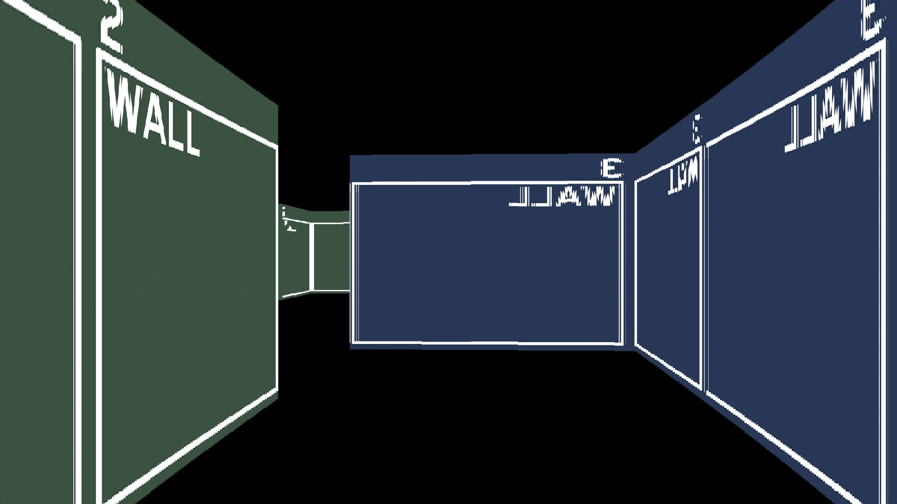
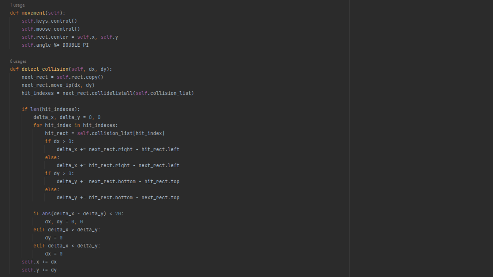

kNEO engine developed by G02m0n1k
This work is licensed under CC BY 4.0

A simple engine written in Python, along with the "numba" and "pygame" libraries that made it what it is.
The engine uses Ray Casting technology, which was used in a game like "Wolfenstein 3D".
It is not difficult to write and is also easy to use.
It doesn't represent anything high-tech. It is the engine that is designed to show how mysterious old games can be.
The engine is designed exclusively for Windows 10+ PCs
On lower systems and certainly on other OS it will not function properly.
The same applies to all games on this engine (except in cases where the game and/or the engine itself has been modified).
kNEO engine developed by G02m0n1k
This work is licensed under CC BY 4.0